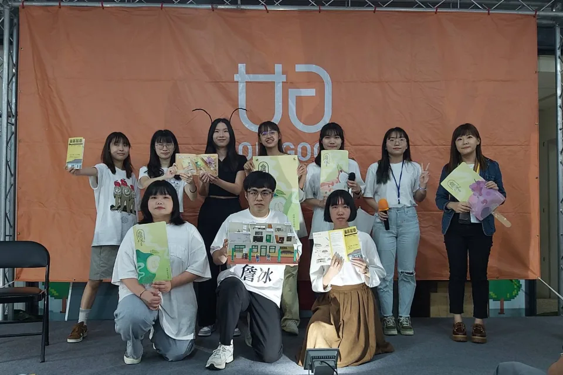
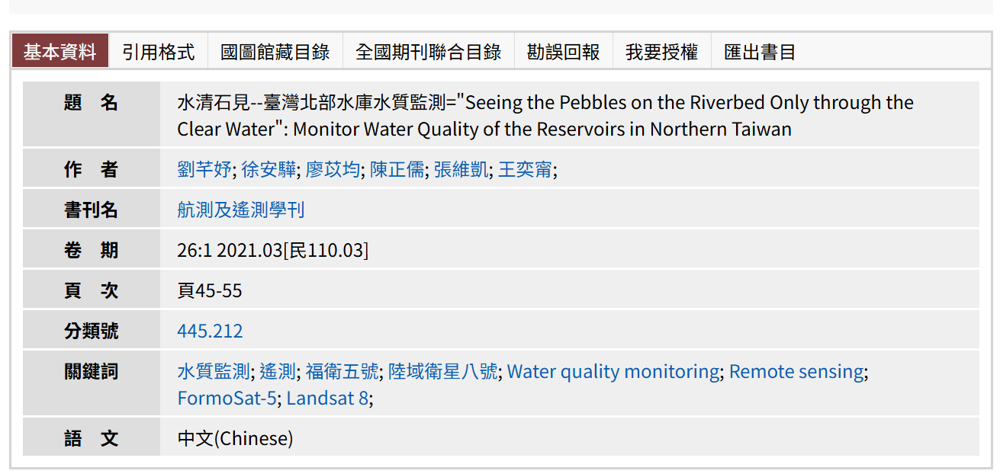
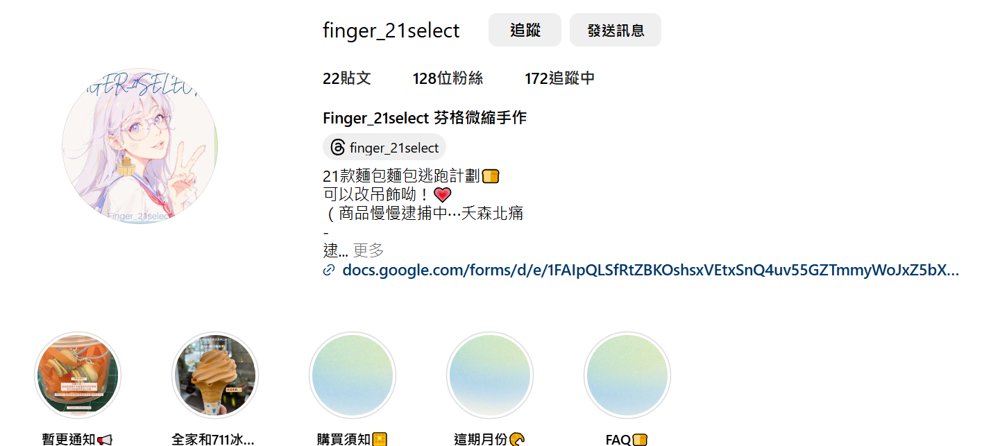

學歷
代表事蹟
書卷獎: 企管班排第三名 (大三上)
班排名: 3/52 百分比: 5.77%
專案: 故居記藝 詩畫展(詹冰╳詹益秀╳詹前裕)
與商設系及企管系的同學組成九人團隊，學習如何整合跨領域的專業知識。我們的專案是活化位於苗栗卓蘭的詹冰故居老宅，業主希望我們提出可行的方案，滿足當地居民及業主的需求。在專案過程中，我們面臨了許多摩擦與協調的挑戰。透過觀察組織氛圍，了解團隊成員的想法，以及不斷調查當地居民及業主的需求。最終，我們以舉辦展覽的方式呈現專案成果，成功運用企管系的廣告行銷企劃能力讓當天參觀人次達到110
比賽: 2020福衛五號小論文比賽全國第一名
從高中開始，我對研究充滿好奇。在高三時，我與朋友們組隊參加了全國衛星小論文競賽，這是我第一次正式進行學術研究。我們的目標是深入研究石門水庫及寶山水庫的水質，並透過文獻閱讀產出一篇小論文，這對於當時的我們來說，是一個相當艱鉅的挑戰。在研究過程中，我們多次遭遇挫折，數次懷疑自己的能力，甚至想過放棄。但在老師的指導下，最終克服了重重難關。而我們的努力沒有白費，獲得了全國第一名的殊榮，並成功將小論文發表於期刊上
期刊: 航測及遙測學刊 水清石見--台灣北部水庫水質監測
自我介紹
我的名字是廖苡均，中原大學企業管理學系。有經營自己的手作商店首月達到2166次瀏覽次數，閒暇之餘也會做甜點和麵包。
語言
英文、日文、韓文
程式語言
其他技能
Photoshop
Illustrator
Excel VBA


